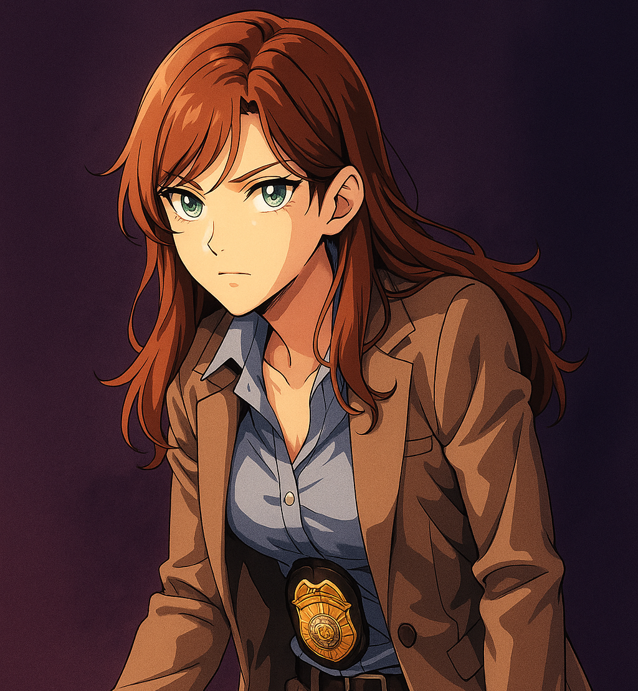

Dexter Morgan
Perito forense em sangue que vive como serial killer de criminosos.

Debra Morgan
Detetive determinada, impulsiva e corajosa e irmã adotiva de Dexter.
James Doakes
Sargento durão, sempre desconfiado de Dexter.
Maria LaGuerta
Tenente ambiciosa, mais focada em carreira que em justiça.
Vince Masuka
Perito excêntrico e engraçado, especialista em sangue.
Rita Bennett
Companheira de Dexter, doce e ingênua.
Angel Batista
Detetive leal, justo e de bom coração.

Brian Moser
Irmão biológico de Dexter e serial killer.
Joey Quinn
Detetive persistente, às vezes em conflito com colegas.
Lila West
Artista britânica obsessiva e manipuladora.